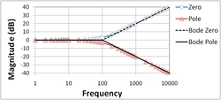

The strict original usage above only expresses a relative change. However, the word decibel has since also been used for expressing an absolute value that is relative to some fixed reference value, in which case the dB symbol is often suffixed with letter codes that indicate the reference value. For example, for the reference value of 1 volt, a common suffix is "V" (e.g., "20 dBV").[3][4]
As it originated from a need to express power ratios, two principal types of scaling of the decibel are used to provide consistency depending on whether the scaling refers to ratios of power quantities or root-power quantities. When expressing a power ratio, the corresponding change in decibels is defined as ten times the logarithm with base 10 of that ratio.[5] That is, a change in power by a factor of 10 corresponds to a 10 dB change in level. When expressing root-power ratios, a change in amplitude by a factor of 10 corresponds to a 20 dB change in level. The decibel scales differ by a factor of two, so that the related power and root-power levels change by the same value in linear systems, where power is proportional to the square of amplitude.
The decibel originates from methods used to quantify signal loss in telegraph and telephone circuits. Until the mid-1920s, the unit for loss was miles of standard cable (MSC). 1 MSC corresponded to the loss of power over one mile (approximately 1.6 km) of standard telephone cable at a frequency of 5000radians per second (795.8 Hz), and matched closely the smallest attenuation detectable to a listener. A standard telephone cable was "a cable having uniformly distributed resistance of 88 ohms per loop-mile and uniformly distributed shuntcapacitance of 0.054 microfarads per mile" (approximately corresponding to 19 gauge wire).[6]
In 1924, Bell Telephone Laboratories received a favorable response to a new unit definition among members of the International Advisory Committee on Long Distance Telephony in Europe and replaced the MSC with the Transmission Unit (TU). 1 TU was defined such that the number of TUs was ten times the base-10 logarithm of the ratio of measured power to a reference power.[7] The definition was conveniently chosen such that 1 TU approximated 1 MSC; specifically, 1 MSC was 1.056 TU. In 1928, the Bell system renamed the TU as the decibel,[8] being one tenth of a newly defined unit for the base-10 logarithm of the power ratio. It was named the bel, in honor of the telecommunications pioneer Alexander Graham Bell.[9] The bel is seldom used, as the decibel was the proposed working unit.[10]
The naming and early definition of the decibel is described in the NBS Standard's Yearbook of 1931:[11]
Since the earliest days of the telephone, the need for a unit in which to measure the transmission efficiency of telephone facilities has been recognized. The introduction of cable in 1896 afforded a stable basis for a convenient unit and the "mile of standard" cable came into general use shortly thereafter. This unit was employed up to 1923 when a new unit was adopted as being more suitable for modern telephone work. The new transmission unit is widely used among the foreign telephone organizations and recently it was termed the "decibel" at the suggestion of the International Advisory Committee on Long Distance Telephony.
The decibel may be defined by the statement that two amounts of power differ by 1 decibel when they are in the ratio of 100.1 and any two amounts of power differ by N decibels when they are in the ratio of 10N(0.1). The number of transmission units expressing the ratio of any two powers is therefore ten times the common logarithm of that ratio. This method of designating the gain or loss of power in telephone circuits permits direct addition or subtraction of the units expressing the efficiency of different parts of the circuit ...
The word decibel was soon misused to refer to absolute quantities and to ratios other than power. Some proposals attempted to address the resulting confusion. In 1954, J. W. Horton considered that 100.1 be treated as an elementary ratio and proposed the word logit as "a standard ratio which has the numerical value 100.1 and which combines by multiplication with similar ratios of the same value", so one would describe a 100.1 ratio of units of mass as "a mass logit". This contrasts with the word unit which would be reserved for magnitudes which combine by addition and reserves the word decibel specifically for unit transmission loss.[12] The decilog was another proposal (by N. B. Saunders in 1943, A. G. Fox in 1951, and E. I. Green in 1954) to express a division of the logarithmic scale corresponding to a ratio of 100.1.[13]
An example scale showing power ratios x, amplitude ratios √x, and dB equivalents 10 log10x
The IEC Standard 60027-3:2002 defines the following quantities. The decibel (dB) is one-tenth of a bel: 1 dB = 0.1 B. The bel (B) is 1/2 ln(10) nepers: 1 B = 1/2 ln(10) Np. The neper is the change in the level of a root-power quantity when the root-power quantity changes by a factor of e, that is 1 Np = ln(e) = 1, thereby relating all of the units as nondimensional natural log of root-power-quantity ratios, 1 dB = 0.11513... Np = 0.11513.... Finally, the level of a quantity is the logarithm of the ratio of the value of that quantity to a reference value of the same kind of quantity.
Therefore, the bel represents the logarithm of a ratio between two power quantities of 10:1, or the logarithm of a ratio between two root-power quantities of √10:1.[17]
Two signals whose levels differ by one decibel have a power ratio of 101/10, which is approximately 1.25893, and an amplitude (root-power quantity) ratio of 101/20 (1.12202).[1][2]
The bel is rarely used either without a prefix or with SI unit prefixes other than deci; it is customary, for example, to use hundredths of a decibel rather than millibels. Thus, five one-thousandths of a bel would normally be written 0.05 dB, and not 5 mB.[18]
The method of expressing a ratio as a level in decibels depends on whether the measured property is a power quantity or a root-power quantity; see Power, root-power, and field quantities for details.
Power quantities
When referring to measurements of power quantities, a ratio can be expressed as a level in decibels by evaluating ten times the base-10 logarithm of the ratio of the measured quantity to reference value. Thus, the ratio of P (measured power) to P0 (reference power) is represented by LP, that ratio expressed in decibels,[19] which is calculated using the formula:[20]
The base-10 logarithm of the ratio of the two power quantities is the number of bels. The number of decibels is ten times the number of bels (equivalently, a decibel is one-tenth of a bel). P and P0 must measure the same type of quantity, and have the same units before calculating the ratio. If P =P0 in the above equation, then LP = 0. If P is greater than P0 then LP is positive; if P is less than P0 then LP is negative.
Rearranging the above equation gives the following formula for P in terms of P0 and LP :
When referring to measurements of root-power quantities, it is usual to consider the ratio of the squares of F (measured) and F0 (reference). This is because the definitions were originally formulated to give the same value for relative ratios for both power and root-power quantities. Thus, the following definition is used:
The formula may be rearranged to give
Similarly, in electrical circuits, dissipated power is typically proportional to the square of voltage or current when the impedance is constant. Taking voltage as an example, this leads to the equation for power gain level LG:
where Vout is the root-mean-square (rms) output voltage, Vin is the rms input voltage. A similar formula holds for current.
The term root-power quantity is introduced by ISO Standard 80000-1:2009 as a substitute of field quantity. The term field quantity is deprecated by that standard and root-power is used throughout this article.
Relationship between power and root-power levels
Although power and root-power quantities are different quantities, their respective levels are historically expressed in the same units, typically decibels. A factor of 2 is introduced to make changes in the respective levels match under restricted conditions such as when the medium is linear and the same waveform is under consideration with changes in amplitude, or the medium impedance is linear and independent of both frequency and time. This relies on the relationship
holding.[21] In a nonlinear system, this relationship does not hold by the definition of linearity. However, even in a linear system in which the power quantity is the product of two linearly related quantities (e.g. voltage and current), if the impedance is frequency- or time-dependent, this relationship does not hold in general, for example if the energy spectrum of the waveform changes.
For differences in level, the required relationship is relaxed from that above to one of proportionality (i.e., the reference quantities P0 and F0 need not be related), or equivalently,
must hold to allow the power level difference to be equal to the root-power level difference from power P1 and F1 to P2 and F2. An example might be an amplifier with unity voltage gain independent of load and frequency driving a load with a frequency-dependent impedance: the relative voltage gain of the amplifier is always 0 dB, but the power gain depends on the changing spectral composition of the waveform being amplified. Frequency-dependent impedances may be analyzed by considering the quantities power spectral density and the associated root-power quantities via the Fourier transform, which allows elimination of the frequency dependence in the analysis by analyzing the system at each frequency independently.
Conversions
Since logarithm differences expressed in these units often represent power ratios and root-power ratios, values for both are shown below. The bel is traditionally used as a unit of logarithmic power ratio, while the neper is used for logarithmic root-power (amplitude) ratio.
Conversion between units of level and a list of corresponding ratios
Calculating the ratio in decibels of 1 kW (one kilowatt, or 1000 watts) to 1 W yields:
The ratio in decibels of √1000 V ≈ 31.62 V to 1 V is:
(31.62 V / 1 V)2 ≈ 1 kW / 1 W, illustrating the consequence from the definitions above that LG has the same value, 30 dB, regardless of whether it is obtained from powers or from amplitudes, provided that in the specific system being considered power ratios are equal to amplitude ratios squared.
The ratio in decibels of 10 W to 1 mW (one milliwatt) is obtained with the formula:
The power ratio corresponding to a 3 dB change in level is given by:
A change in power ratio by a factor of 10 corresponds to a change in level of 10 dB. A change in power ratio by a factor of 2 or 1/2 is approximately a change of 3 dB. More precisely, the change is ±3.0103 dB, but this is almost universally rounded to 3 dB in technical writing.[citation needed] This implies an increase in voltage by a factor of √2 ≈1.4142. Likewise, a doubling or halving of the voltage, corresponding to a quadrupling or quartering of the power, is commonly described as 6 dB rather than ±6.0206 dB.
Should it be necessary to make the distinction, the number of decibels is written with additional significant figures. 3.000 dB corresponds to a power ratio of 103/10, or 1.9953, about 0.24% different from exactly 2, and a voltage ratio of 1.4125, about 0.12% different from exactly √2. Similarly, an increase of 6.000 dB corresponds to a power ratio of 106/10 ≈3.9811, about 0.5% different from 4.
Properties
The decibel is useful for representing large ratios and for simplifying representation of multiplicative effects, such as attenuation from multiple sources along a signal chain. Its application in systems with additive effects is less intuitive, such as in the combined sound pressure level of two machines operating together. Care is also necessary with decibels directly in fractions and with the units of multiplicative operations.
Reporting large ratios
A Bode plot labels its magnitude axis in decibels, to help express a large logarithmic scale with 0 dB for unity gain and simple notches typically every 10 dB.
The logarithmic scale nature of the decibel means that a very large range of ratios can be represented by a convenient number. For example, 50 dB is easier to say than "the two powers bear a 100,000 to 1 ratio" or that "one power is 105 the other".[13] Decibels express huge changes of a quantity with few digits of dB.
Representation of multiplication operations
Level values in decibels can be added instead of multiplying the underlying power values, which means that the overall gain of a multi-component system, such as a series of amplifier stages, can be calculated by summing the gains in decibels of the individual components, rather than multiply the amplification factors; that is, log(A × B × C) = log(A) + log(B) + log(C). Practically, this means that, armed only with the knowledge that 1 dB is a power gain of approximately 26%, 3 dB is approximately 2× power gain, and 10 dB is 10× power gain, it is possible to determine the power ratio of a system from the gain in dB with only simple addition and multiplication. For example:
A system consists of 3 amplifiers in series, with gains (ratio of power out to in) of 10 dB, 8 dB, and 7 dB respectively, for a total gain of 25 dB. Broken into combinations of 10, 3, and 1 dB, this is:
25 dB = 10 dB + 10 dB + 3 dB + 1 dB + 1 dB
With an input of 1 watt, the output is approximately
1 W × 10 × 10 × 2 × 1.26 × 1.26 ≈ 317.5 W
Calculated precisely, the output is 1 W × 1025/10 ≈ 316.2 W. The approximate value has an error of only +0.4% with respect to the actual value, which is negligible given the precision of the values supplied and the accuracy of most measurement instrumentation.
However, according to its critics, the decibel creates confusion, obscures reasoning, is more related to the era of slide rules than to modern digital processing, and is cumbersome and difficult to interpret.[22][23] Quantities in decibels are not necessarily additive,[24][25] thus being "of unacceptable form for use in dimensional analysis".[26] Thus, units require special care in decibel operations. Take, for example, carrier-to-noise-density ratioC/N0 (in hertz), involving carrier power C (in watts) and noise power spectral density N0 (in W/Hz). Expressed in decibels, this ratio would be a subtraction (C/N0)dB = CdB − N0 dB. However, the linear-scale units still simplify in the implied fraction, so that the results would be expressed in dB-Hz.
According to Mitschke,[27] "The advantage of using a logarithmic measure is that in a transmission chain, there are many elements concatenated, and each has its own gain or attenuation. To obtain the total, addition of decibel values is much more convenient than multiplication of the individual factors." However, for the same reason that humans excel at additive operation over multiplication, decibels are awkward in inherently additive operations:[28]
if two machines each individually produce a sound pressure level of, say, 90 dB at a certain point, then when both are operating together we should expect the combined sound pressure level to increase to 93 dB, but certainly not to 180 dB!; suppose that the noise from a machine is measured (including the contribution of background noise) and found to be 87 dBA but when the machine is switched off the background noise alone is measured as 83 dBA. [...] the machine noise [level (alone)] may be obtained by 'subtracting' the 83 dBA background noise from the combined level of 87 dBA; i.e., 84.8 dBA.; in order to find a representative value of the sound level in a room a number of measurements are taken at different positions within the room, and an average value is calculated. [...] Compare the logarithmic and arithmetic averages of [...] 70 dB and 90 dB: logarithmic average = 87 dB; arithmetic average = 80 dB.
Addition on a logarithmic scale is called logarithmic addition, and can be defined by taking exponentials to convert to a linear scale, adding there, and then taking logarithms to return. For example, where operations on decibels are logarithmic addition/subtraction and logarithmic multiplication/division, while operations on the linear scale are the usual operations:
The logarithmic mean is obtained from the logarithmic sum by subtracting , since logarithmic division is linear subtraction.
Fractions
Attenuation constants, in topics such as optical fiber communication and radio propagationpath loss, are often expressed as a fraction or ratio to distance of transmission. In this case, dB/m represents decibel per meter, dB/mi represents decibel per mile, for example. These quantities are to be manipulated obeying the rules of dimensional analysis, e.g., a 100-meter run with a 3.5 dB/km fiber yields a loss of 0.35 dB =3.5 dB/km × 0.1 km.
Uses
Perception
The human perception of the intensity of sound and light more nearly approximates the logarithm of intensity rather than a linear relationship (see Weber–Fechner law), making the dB scale a useful measure.[29][30][31][32][33][34]
where prms is the root mean square of the measured sound pressure and pref is the standard reference sound pressure of 20 micropascals in air or 1 micropascal in water.[35]
Use of the decibel in underwater acoustics leads to confusion, in part because of this difference in reference value.[36][37]
Sound intensity is proportional to the square of sound pressure. Therefore, the sound intensity level can also be defined as:
The human ear has a large dynamic range in sound reception. The ratio of the sound intensity that causes permanent damage during short exposure to that of the quietest sound that the ear can hear is equal to or greater than 1 trillion (1012).[38] Such large measurement ranges are conveniently expressed in logarithmic scale: the base-10 logarithm of 1012 is 12, which is expressed as a sound intensity level of 120 dB re 1 pW/m2. The reference values of I and p in air have been chosen such that this corresponds approximately to a sound pressure level of 120 dB re 20 μPa.
The original choice of the decibel over the bel as a log unit of change of intensity is because a single change in a property of sound which is below the just-noticeable difference (JND) does not affect perception of the sound. For amplitude, the JND for humans is around 1 dB.[39][40]
Since the human ear is not equally sensitive to all sound frequencies, the acoustic power spectrum is modified by frequency weighting (A-weighting being the most common standard) to get the weighted acoustic power before converting to a sound level or noise level in decibels.[41]
Telephony
The decibel is used in telephony and audio. Similarly to the use in acoustics, a frequency weighted power is often used. For audio noise measurements in electrical circuits, the weightings are called psophometric weightings.[42]
Electronics
In electronics, the decibel is often used to express power or amplitude ratios (as for gains) in preference to arithmetic ratios or percentages. One advantage is that the total decibel gain of a series of components (such as amplifiers and attenuators) can be calculated simply by summing the decibel gains of the individual components. Similarly, in telecommunications, decibels denote signal gain or loss from a transmitter to a receiver through some medium (free space, waveguide, coaxial cable, fiber optics, etc.) using a link budget.
The decibel unit can also be combined with a reference level, often indicated via a suffix, to create an absolute unit of electric power. For example, dBW uses a 1 W reference, while dBm uses a 1 mW reference (m being short for milliwatt). A power level of 0 dBm corresponds to one milliwatt, and 1 dBm is one decibel greater (about 1.259 mW).
In professional audio specifications, a popular unit is the dBu. This is relative to the root mean square voltage which delivers 1 mW (0 dBm) into a 600-ohm resistor, or √1 mW × 600 Ω ≈ 0.775 VRMS. When used in a 600-ohm circuit (historically, the standard reference impedance in telephone circuits), dBu and dBm are identical.
Optics
In an optical link, if a known amount of optical power, in dBm (referenced to 1 mW), is launched into a fiber, and the losses, in dB (decibels), of each component (e.g., connectors, splices, and lengths of fiber) are known, the overall link loss may be quickly calculated by addition and subtraction of decibel quantities.[43]
In connection with video and digital image sensors, decibels generally represent ratios of video voltages or digitized light intensities, using 20 log of the ratio, even when the represented intensity (optical power) is directly proportional to the voltage generated by the sensor, not to its square, as in a CCD imager where response voltage is linear in intensity.[44]
Thus, a camera signal-to-noise ratio or dynamic range quoted as 40 dB represents a ratio of 100:1 between optical signal intensity and optical-equivalent dark-noise intensity, not a 10,000:1 intensity (power) ratio as 40 dB might suggest.[45]
Sometimes the 20 log ratio definition is applied to electron counts or photon counts directly, which are proportional to sensor signal amplitude without the need to consider whether the voltage response to intensity is linear.[46]
However, as mentioned above, the 10 log intensity convention prevails more generally in physical optics, including fiber optics, so the terminology can become murky between the conventions of digital photographic technology and physics. Most commonly, quantities called dynamic range or signal-to-noise (of the camera) would be specified in 20 log dB, but in related contexts (e.g. attenuation, gain, intensifier SNR, or rejection ratio) the term should be interpreted cautiously, as confusion of the two units can result in very large misunderstandings of the value.
Photographers typically use an alternative base-2 log unit, the stop, to describe light intensity ratios or dynamic range.
Suffixes and reference values
Suffixes are commonly attached to the basic dB unit in order to indicate the reference value by which the ratio is calculated. For example, dBm indicates power measurement relative to 1 milliwatt.
In cases where the unit value of the reference is stated, the decibel value is known as "absolute". If the unit value of the reference is not explicitly stated, as in the dB gain of an amplifier, then the decibel value is considered relative.
This form of attaching suffixes to dB is widespread in practice, albeit being against the rules promulgated by standards bodies (ISO and IEC),[16] given the "unacceptability of attaching information to units"[a] and the "unacceptability of mixing information with units".[b] The IEC 60027-3 standard recommends the following format:[15]Lx (re xref) or as Lx/xref, where x is the quantity symbol and xref is the value of the reference quantity, e.g., LE (re 1 μV/m) = 20 dB or LE/(1 μV/m) = 20 dB for the electric field strengthE relative to 1 μV/m reference value.
If the measurement result 20 dB is presented separately, it can be specified using the information in parentheses, which is then part of the surrounding text and not a part of the unit: 20 dB (re 1 μV/m) or 20 dB (1 μV/m).
Outside of documents adhering to SI units, the practice is very common as illustrated by the following examples. There is no general rule, with various discipline-specific practices. Sometimes the suffix is a unit symbol ("W","K","m"), sometimes it is a transliteration of a unit symbol ("uV" instead of μV for microvolt), sometimes it is an acronym for the unit's name ("sm" for square meter, "m" for milliwatt), other times it is a mnemonic for the type of quantity being calculated ("i" for antenna gain with respect to an isotropic antenna, "λ" for anything normalized by the EM wavelength), or otherwise a general attribute or identifier about the nature of the quantity ("A" for A-weighted sound pressure level). The suffix is often connected with a hyphen, as in "dB‑Hz", or with a space, as in "dB HL", or enclosed in parentheses, as in "dB(HL)", or with no intervening character, as in "dBm" (which is non-compliant with international standards).
List of suffixes
Voltage
Since the decibel is defined with respect to power, not amplitude, conversions of voltage ratios to decibels must square the amplitude, or use the factor of 20 instead of 10, as discussed above.
dBV
dB(VRMS) – voltage relative to 1 volt, regardless of impedance.[3] This is used to measure microphone sensitivity, and also to specify the consumer line-level of −10 dBV, in order to reduce manufacturing costs relative to equipment using the much larger +4 dBu line-level standard.[47]
dBu or dBv
Schematic of a 0 dBu voltage source dissipating 0 dBm of power as heat in a 600 Ω resistor 0 dBu is defined as the RMS voltage that would dissipate 0 dBm (1 mW) in a 600 Ω load. Per Ohm's law, this voltage equals:Therefore, 1 VRMS corresponds to:[3]Originally called dBv, it was changed to dBu to avoid confusion with dBV.[48] According to Rupert Neve, the u originated from the volume unit displayed on a VU meter.[49] The u has also been interpreted as unloaded.[50]
In professional audio, equipment may be calibrated to indicate a "0" on the VU meters some finite time after a signal has been applied at an amplitude of +4 dBu. Consumer equipment typically uses a lower "nominal" signal level of −10 dBV.[51] Therefore, many devices offer dual voltage operation (with different gain or "trim" settings) for compatibility. A switch or adjustment that covers at least the range between +4 dBu and −10 dBV is common in professional equipment.
dBm0s
Defined by Recommendation ITU-R V.574; dBmV: dB(mVRMS) – root mean square voltage relative to 1 millivolt across 75 Ω.[52] Widely used in cable television networks, where the nominal strength of a single TV signal at the receiver terminals is about 0 dB mV. Cable TV uses 75 Ω coaxial cable, so 0 dB mV corresponds to −78.75 dBW, −48.75 dBm or approximately 13 nW.
dBμV or dBuV
dB(μVRMS) – voltage relative to 1 microvolt. Widely used in television and aerial amplifier specifications. 60 dBμV = 0 dBmV.
Acoustics
Probably the most common usage of "decibels" in reference to sound level is dB SPL, sound pressure level referenced to the nominal threshold of human hearing:[53] The measures of pressure (a root-power quantity) use the factor of 20, and the measures of power (e.g. dBSIL and dBSWL) use the factor of 10.
dBSPL
dBSPL (sound pressure level) – for sound in air and other gases, relative to 20 micropascals (μPa), or 2×10−5 Pa, a level of 0 dBSPL is approximately the quietest sound a human can hear. For sound in water and other liquids, a reference pressure of 1 μPa is used.[54] An RMS sound pressure of one pascal corresponds to a level of 94 dB SPL.
These symbols are often used to denote the use of different weighting filters, used to approximate the human ear's response to sound, although the measurement is still in dB (SPL). These measurements usually refer to noise and its effects on humans and other animals, and they are widely used in industry while discussing noise control issues, regulations and environmental standards. Other variations that may be seen are dBA or dB(A). According to standards from the International Electro-technical Committee (IEC 61672-2013)[55] and the American National Standards Institute, ANSI S1.4,[56] the preferred usage is to write L A = x dB. Nevertheless, the units dB(A) are still commonly used as a shorthand for A‑weighted measurements. Compare dBc, used in telecommunications.
dBHL
dB hearing level is used in audiograms as a measure of hearing loss. The reference level varies with frequency according to a minimum audibility curve as defined in ANSI and other standards, such that the resulting audiogram shows deviation from what is regarded as 'normal' hearing.[citation needed]
dBmW – power relative to 1 milliwatt. In audio and telephony, dBm is typically referenced relative to a 600 Ω impedance,[59] which corresponds to a voltage level of 0.775 volts or 775 millivolts.
dB(full scale) – the amplitude of a signal compared with the maximum which a device can handle before clipping occurs. Full-scale may be defined as the power level of a full-scale sinusoid or alternatively a full-scale square wave. A signal measured with reference to a full-scale sine-wave appears 3 dB weaker when referenced to a full-scale square wave, thus: 0 dBFS(fullscale sine wave) = −3 dBFS (fullscale square wave).
dB(true peak) – peak amplitude of a signal compared with the maximum which a device can handle before clipping occurs.[61] In digital systems, 0 dBTP would equal the highest level (number) the processor is capable of representing. Measured values are always negative or zero, since they are less than or equal to full-scale.
dBZ – decibel relative to Z = 1 mm6⋅m−3 :[62] energy of reflectivity (weather radar), related to the amount of transmitted power returned to the radar receiver. Values above 20 dBZ usually indicate falling precipitation.[63]
dBsm
dB(m2) – decibel relative to one square meter: measure of the radar cross section (RCS) of a target. The power reflected by the target is proportional to its RCS. "Stealth" aircraft and insects have negative RCS measured in dBsm, large flat plates or non-stealthy aircraft have positive values.[64]
relative to carrier – in telecommunications, this indicates the relative levels of noise or sideband power, compared with the carrier power. Compare dB(C), used in acoustics.
dBpp
relative to the maximum value of the peak power.
dBJ
energy relative to 1 joule. 1 joule = 1 watt second = 1 watt per hertz, so power spectral density can be expressed in dBJ.
dB(mW) – power relative to 1 milliwatt. In the radio field, dBm is usually referenced to a 50 Ω load, with the resultant voltage being 0.224 volts.[65]
dB optical. A change of 1 dBo in optical power can result in a change of up to 2 dBe in electrical signal power in a system that is thermal noise limited.[67]
Antenna measurements
dBi
dB(isotropic) – the gain of an antenna compared with the gain of a theoretical isotropic antenna, which uniformly distributes energy in all directions. Linear polarization of the EM field is assumed unless noted otherwise.
dBd
dB(dipole) – the gain of an antenna compared with the gain a half-wave dipole antenna. 0 dBd = 2.15 dBi
dBiC
dB(isotropic circular) – the gain of an antenna compared to the gain of a theoretical circularly polarized isotropic antenna. There is no fixed conversion rule between dBiC and dBi, as it depends on the receiving antenna and the field polarization.
dBq
dB(quarterwave) – the gain of an antenna compared to the gain of a quarter wavelength whip. Rarely used, except in some marketing material; 0 dBq = −0.85 dBi
dBsm
dB(m2) – decibels relative to one square meter: A measure of the effective area for capturing signals of the antenna.[68]
dBm−1
dB(m−1) – decibels relative to reciprocal of meter: measure of the antenna factor.
dB(overload) – the amplitude of a signal (usually audio) compared with the maximum which a device can handle before clipping occurs. Similar to dB FS, but also applicable to analog systems. According to ITU-T Rec. G.100.1 the level in dB ov of a digital system is defined as: with the maximum signal power , for a rectangular signal with the maximum amplitude . The level of a tone with a digital amplitude (peak value) of is therefore .[69]
dBr
dB(relative) – simply a relative difference from something else, which is made apparent in context. The difference of a filter's response to nominal levels, for instance.
dB(rnC) represents an audio level measurement, typically in a telephone circuit, relative to a −90 dBm reference level, with the measurement of this level frequency-weighted by a standard C-message weighting filter. The C-message weighting filter was chiefly used in North America. The psophometric filter is used for this purpose on international circuits.[c][70]
dB(full scale) – the amplitude of a signal compared with the maximum which a device can handle before clipping occurs. Full-scale may be defined as the power level of a full-scale sinusoid or alternatively a full-scale square wave. A signal measured with reference to a full-scale sine-wave appears 3 dB weaker when referenced to a full-scale square wave, thus: 0 dBFS (fullscale sine wave) = −3 dBFS (full-scale square wave).
dB(isotropic) – the forward gain of an antenna compared with the hypothetical isotropic antenna, which uniformly distributes energy in all directions. Linear polarization of the EM field is assumed unless noted otherwise.
dBiC
dB(isotropic circular) – the forward gain of an antenna compared to a circularly polarized isotropic antenna. There is no fixed conversion rule between dBiC and dBi, as it depends on the receiving antenna and the field polarization.
dBJ
energy relative to 1 joule: 1 joule = 1 watt-second = 1 watt per hertz, so power spectral density can be expressed in dBJ.
Power in dBm measured at a zero transmission level point.
dBm0s
Defined by Recommendation ITU-R V.574.
dBmV
dB(mVRMS) – voltage relative to 1 millivolt across 75 Ω.
dBo
dB optical. A change of 1 dBo in optical power can result in a change of up to 2 dBe in electrical signal power in system that is thermal noise limited.
dBO
see dBov
dBov or dBO
dB(overload) – the amplitude of a signal (usually audio) compared with the maximum which a device can handle before clipping occurs.
dB(quarterwave) – the forward gain of an antenna compared to a quarter wavelength whip. Rarely used, except in some marketing material. 0 dBq = −0.85 dBi
dBr
dB(relative) – simply a relative difference from something else, which is made apparent in context. The difference of a filter's response to nominal levels, for instance.
represents an audio level measurement, typically in a telephone circuit, relative to the circuit noise level, with the measurement of this level frequency-weighted by a standard C-message weighting filter. The C-message weighting filter was chiefly used in North America.
dBsm
see dBm2
dBTP
dB(true peak) – peak amplitude of a signal compared with the maximum which a device can handle before clipping occurs.
dBu or dBv
RMS voltage relative to
dBu0s
Defined by Recommendation ITU-R V.574.
dBuV
see dBμV
dBuV/m
see dBμV/m
dBv
see dBu
dBV
dB(VRMS) – voltage relative to 1 volt, regardless of impedance.
These symbols are often used to denote the use of different weighting filters, used to approximate the human ear's response to sound, although the measurement is still in dB (SPL). These measurements usually refer to noise and its effects on humans and other animals, and they are widely used in industry while discussing noise control issues, regulations and environmental standards. Other variations that may be seen are dBA or dBA.
dB(m−1) – decibel relative to reciprocal of meter: measure of the antenna factor
mBm
mB(mW) – power relative to 1 milliwatt, in millibels (one hundredth of a decibel). 100 mBm = 1 dBm. This unit is in the Wi-Fi drivers of the Linux kernel[76] and the regulatory domain sections.[77]
^"When one gives the value of a quantity, it is incorrect to attach letters or other symbols to the unit in order to provide information about the quantity or its conditions of measurement. Instead, the letters or other symbols should be attached to the quantity."[16]: 16
^"When one gives the value of a quantity, any information concerning the quantity or its conditions of measurement must be presented in such a way as not to be associated with the unit. This means that quantities must be defined so that they can be expressed solely in acceptable units..."[16]: 17
^See psophometric weighting to see a comparison of frequency response curves for the C-message weighting and psophometric weighting filters.
References
^ abMark, James E. (2007). Physical Properties of Polymers Handbook. Springer. p. 1025. Bibcode:2007ppph.book.....M. […] the decibel represents a reduction in power of 1.258 times […]
^IEEE Standard 100: a dictionary of IEEE standards and terms (7th ed.). New York: The Institute of Electrical and Electronics Engineering. 2000. p. 288. ISBN978-0-7381-2601-2.
^Johnson, Kenneth Simonds (1944). Transmission Circuits for Telephonic Communication: Methods of analysis and design. New York: D. Van Nostrand Co. p. 10.
^Harrison, William H. (1931). "Standards for Transmission of Speech". Standards Yearbook. 119. National Bureau of Standards, U. S. Govt. Printing Office.
^ abcdThompson, A. and Taylor, B. N. sec 8.7, "Logarithmic quantities and units: level, neper, bel", Guide for the Use of the International System of Units (SI) 2008 Edition, NIST Special Publication 811, 2nd printing (November 2008), SP811 PDF
^"Letter symbols to be used in electrical technology". International Standard CEI-IEC 27-3. International Electrotechnical Commission. Part 3: Logarithmic quantities and units.
^Fedor Mitschke, Fiber Optics: Physics and Technology, Springer, 2010 ISBN3642037038.
^
Junichi Nakamura (2006). "Basics of Image Sensors". In Junichi Nakamura (ed.). Image sensors and signal processing for digital still cameras. CRC Press. pp. 79–83. ISBN978-0-8493-3545-7.
^Thar, D. (1998). "Case Studies: Transient sounds through communication headsets". Applied Occupational and Environmental Hygiene. 13 (10): 691–697. doi:10.1080/1047322X.1998.10390142.
^Chand, N.; Magill, P.D.; Swaminathan, S.V.; Daugherty, T.H. (1999). "Delivery of digital video and other multimedia services ( > 1 Gb/s bandwidth) in passband above the 155 Mb/s baseband services on a FTTx full service access network". Journal of Lightwave Technology. 17 (12): 2449–2460. doi:10.1109/50.809663.
^Definition of dBrnC is given in Rey, R.F., ed. (1983). Engineering and Operations in the Bell System (2nd ed.). Murray Hill, NJ: AT&T Bell Laboratories. p. 230. ISBN0-932764-04-5.
Tuffentsammer, Karl (1956). "Das Dezilog, eine Brücke zwischen Logarithmen, Dezibel, Neper und Normzahlen" [The decilog, a bridge between logarithms, decibel, neper and preferred numbers]. VDI-Zeitschrift (in German). 98: 267–274.


![{\displaystyle L_{\mathsf {ov}}=10\log _{10}\left({\frac {P}{\ P_{\mathsf {max}}\ }}\right)\ [{\mathsf {dB_{ov}}}],}](https://wikimedia.org/api/rest_v1/media/math/render/svg/e5c5ebeecf08836d6f8d6ad470e6e38453438a93)


{kind=link}
{kind=link}